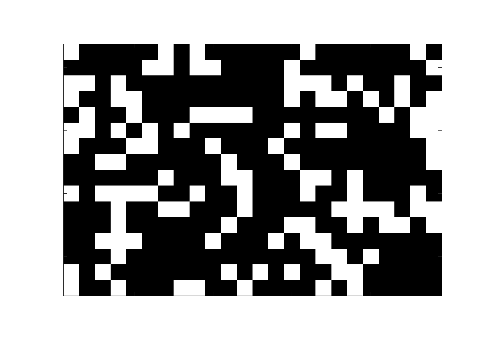
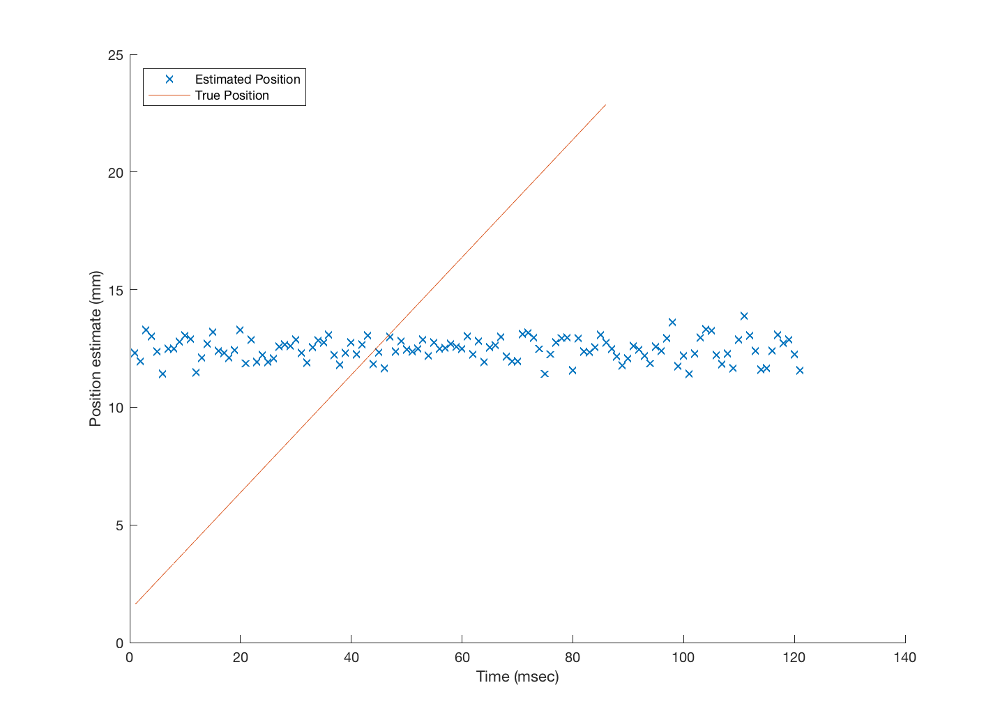

Use the RDT coneMosaic moving bar as input to test RGC mosaic responses
This tutorial generates RGC responses to a moving bar.
* Get precomputed cone mosaic response from RDT * Calculate bipolar * Calculate RGC for on parasol * Estimate position of bar from RGC firing
Based on t_coneMosaic.
7/2016 JRG HJ BW (c) isetbio team
Contents
Initialize parameters
clx; ieInit; ecc = [0,0]*1e-3; % Cone mosaic eccentricity in meters from fovea fov = 2.8; % Scene Field of view in degrees osFlag = 0; % 0 = osLinear, 1 = osBioPhys
RDT computation
rdt = RdtClient('isetbio'); rdt.crp('/resources/data/istim'); switch osFlag case 0 % osLinear data = rdt.readArtifact('barMovie_osLinear', 'type', 'mat'); % data = rdt.readArtifact('barMovie_cMosaic', 'type', 'mat'); case 1 % osBioPhys data = rdt.readArtifact('barMovie_osBioPhys', 'type', 'mat'); end % We are only using the cMosaic sceneRGB = data.iStim.sceneRGB; cMosaic = data.iStim.cMosaic; cMosaic.noiseFlag = 'random'; % Needs to be updated cMosaic.os.noiseFlag = 'random'; cMosaic.computeCurrent; clear data;
Random noise added.
Compute the bipolar response
bp = bipolar(cMosaic); bp.set('sRFcenter',1); bp.set('sRFsurround',1); bp.compute(cMosaic); % bp.plot('movie response')
Set other RGC mosaic parameters
clear params innerRetinaSU cellType = 'onParasol'; % cellType = 'offParasol'; params.name = 'macaque phys'; params.eyeSide = 'left'; params.eyeRadius = sqrt(sum(ecc.^2)); % params.fov = fov; params.eyeAngle = 0; ntrials = 0; % Create RGC object innerRetinaSU = ir(bp, params); innerRetinaSU.mosaicCreate('type',cellType,'model','GLM'); nTrials = 1; innerRetinaSU = irSet(innerRetinaSU,'numberTrials',nTrials);
Compute the inner retina response
innerRetinaSU = irCompute(innerRetinaSU, bp);
lastTime = innerRetinaSU.mosaic{1}.get('last spike time');
Warning: Constant data, hence zero contrast.
Make the PSTH movie
innerRetinaSU.mosaic{1}.set('dt',1);
psth = innerRetinaSU.mosaic{1}.get('psth');
clear params
param.FrameRate = 5; params.step = 2; params.show = true;
% % View movie of RGC linear response
% vcNewGraphWin; ieMovie(innerRetinaSU.mosaic{1}.responseLinear(:,:,1:120));
% View movie of PSTH for mosaic
steadyStateFrame = 50; % Get rid of transient spiking
vcNewGraphWin; ieMovie(psth(:,:,steadyStateFrame:end),params);
% % View average of PSTH movie
% vcNewGraphWin; imagesc(mean(psth,3))
% % Plots of RGC linear response and OS current
% vcNewGraphWin; plot(RGB2XWFormat(innerRetinaSU.mosaic{1}.responseLinear)')
% vcNewGraphWin; plot(RGB2XWFormat(iStim.cMosaic.current)')
 Estimate position of bar
clear colLocation trueLocation szPsth = size(psth); sizeRGB = size(sceneRGB); sizeMosaic = innerRetinaSU.mosaic{1}.get('mosaicSize'); % Plot estimated position of bar versus true position of bar frStart = steadyStateFrame; frEnd = 15; for fr = 1:szPsth(3)-frStart-frEnd % Find indices of spiking cells for each frame [spikingCells1 spikingCells2] = find(psth(:,:,fr+frStart)==1); % Find average column position of spiking RGC for that frame colLocation(fr) = mean(spikingCells2); % Find indicies of true bar pixels for each frame [barPx1 barPx2] = find(sceneRGB(:,:,fr+frStart)>.75); % Find average column position trueLocation(fr) = mean(barPx2)*sizeMosaic(2)./sizeRGB(2); end vcNewGraphWin; scatter(1:szPsth(3)-frStart-frEnd,colLocation-0*min(colLocation),'x'); hold on; plot(1:szPsth(3)-frStart-frEnd,trueLocation); xlabel('Time (msec)'); ylabel('Position estimate (mm)'); legend('Estimated Position','True Position','location','NW');
Make GIF
params.vname = [isetbioRootPath '/local/barMovieTest.gif']; % ieGIF(psth(:,:,steadyStateFrame:end),params);